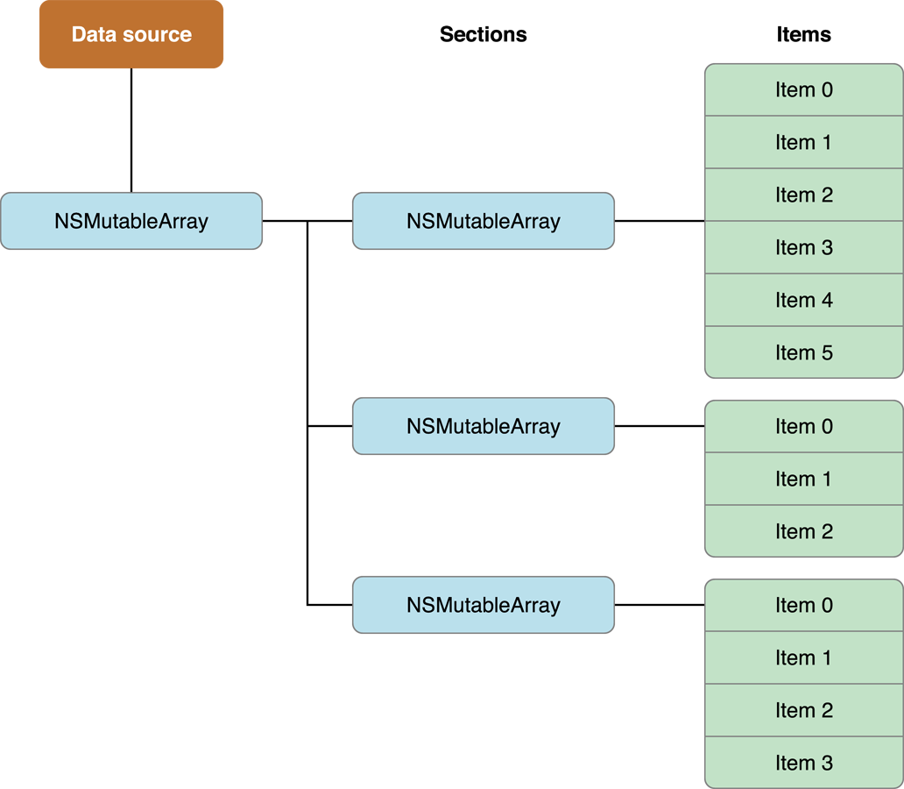
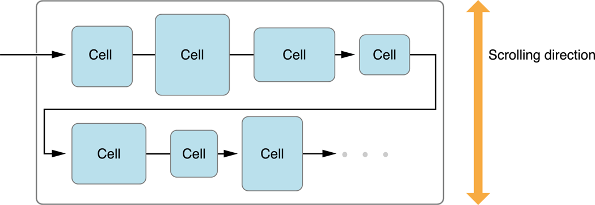
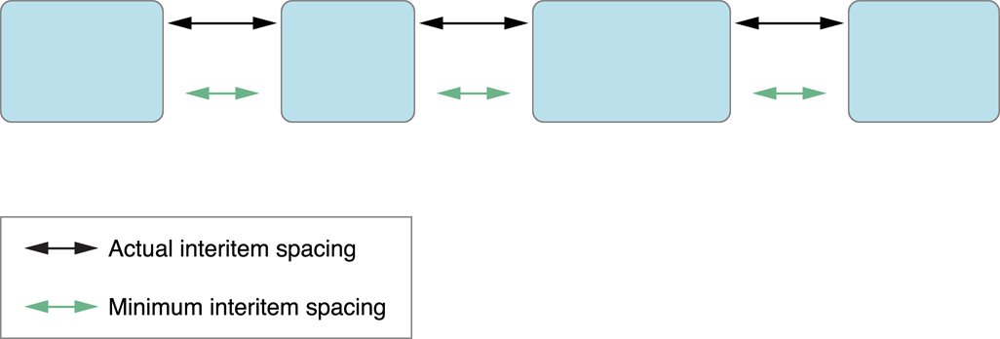
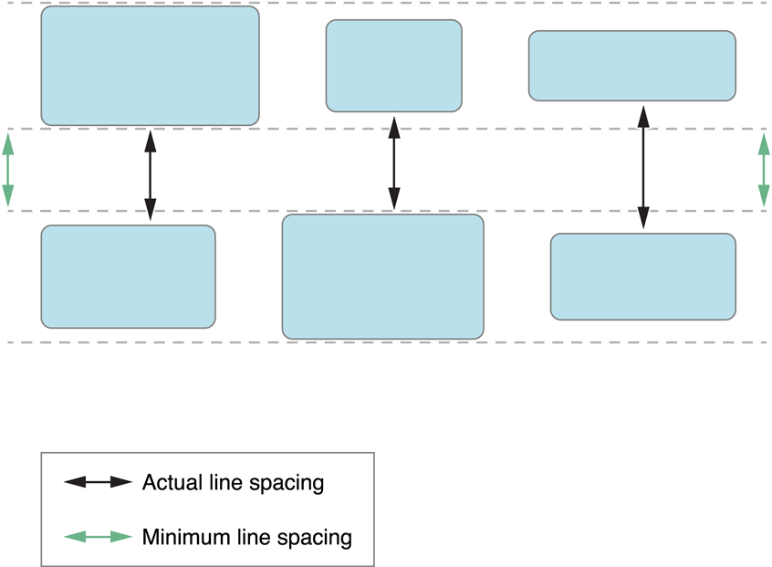
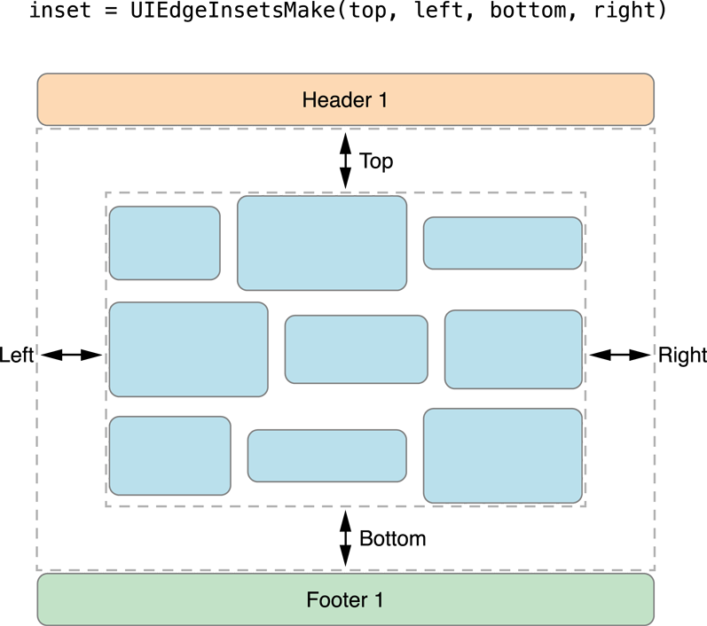

1. 设计数据源和代理
每个集合视图都必须具有数据源对象。该数据源对象是内容，你的应用程序显示。它可以是应用程序数据模型中的对象，也可以是管理集合视图的视图控制器。数据源的唯一要求是它必须能够提供集合视图所需的信息，例如有多少项以及在显示这些项时要使用的视图。
UICollectionViewDelegate是一个可选的（但建议）对象管理有关的介绍，并与您的内容互动方面。虽然代表的主要工作是管理单元格突出显示和选择，但可以扩展它以提供其他信息。例如，流布局扩展了基本委托行为以自定义布局指标，例如单元格的大小和它们之间的间距
For example:
self.collectionView.delegate = self;
self.collectionView.dataSource = self;
2. 注册 cells 和 suppelementary Views
- 配置cell
- registerClass:forCellWithReuseIdentifier:
- registerNib:forCellWithReuseIdentifier:
配置suppelementary Views
- registerClass:forSupplementaryViewOfKind:withReuseIdentifier:
- registerNib:forSupplementaryViewOfKind:withReuseIdentifier:
For example:
[self.collectionView registerNib:[UINib nibWithNibName:@"MyCustomCell" bundle:nil] forCellWithReuseIdentifier:@"cell"];
3. 数据源管理您的内容
- 集合视图包含多少个部分？
- 对于给定的部分，部分包含多少项？
- 对于给定的部分或项目，应使用哪些视图来显示相应的内容？
For example:
-(NSInteger)numberOfSectionsInCollectionView:(UICollectionView*)collectionView {
// _data is a class member variable that contains one array per section.
return [_data count];
}
-(NSInteger)collectionView:(UICollectionView*)collectionView numberOfItemsInSection:(NSInteger)section {
NSArray* sectionArray = [_data objectAtIndex:section];
return [sectionArray count];
}
-(UICollectionViewCell *)collectionView:(UICollectionView *)collectionView cellForItemAtIndexPath:(NSIndexPath *)indexPath{
MyCustomCell * newCell = [self.collectionView dequeueReusableCellWithReuseIdentifier:@"cell"
forIndexPath:indexPath];
newCell.cellLabel.text = [NSString stringWithFormat：@“Section：％d，Item：％d”，indexPath.section，indexPath.item];
return newCell;
}
4. 设计数据对象
高效的数据源使用节和项来帮助组织其底层数据对象。将数据组织成部分和项目可以使以后更轻松地实现数据源方法。而且由于您经常调用数据源方法，因此您需要确保这些方法的实现能够尽快检索数据。
比如下面这个结构

5. 插入，删除和移动部分和项目
在通知集合视图任何更改之前更新数据源至关重要，要插入，删除或移动单个部分或项目，请按照下列步骤操作：
- 更新数据源对象中的数据
- 调用集合视图的相应方法以插入或删除节或项。
以编程方式添加，删除或移动单个项目时，集合视图的方法会自动创建动画以反映更改。但是，如果要同时为多个更改设置动画，则必须在块内执行所有插入，删除或移动调用，并将该块传递给该performBatchUpdates:completion:方法。然后，批量更新过程会同时为所有更改设置动画，您可以自由地混合调用以插入，删除或移动同一块中的项目。
For example:
[self.collectionView performBatchUpdates:^{
NSArray* itemPaths = [self.collectionView indexPathsForSelectedItems];
// Delete the items from the data source.
[self deleteItemsFromDataSourceAtIndexPaths:itemPaths];
// Now delete the items from the collection view.
[self.collectionView deleteItemsAtIndexPaths:itemPaths];
} completion:nil];
6. 管理选择和亮点的可视状态
backgroundView当单元格第一次加载以及单元格未突出显示或未选中时，单元格的属性将始终为默认视图。selectedBackgroundView每当突出显示或选择单元格时，该属性都会替换默认的背景视图。在这种情况下，当选择或突出显示时，单元格的背景颜色将从红色变为白色。
For example:
#import "MyCustomCell.h"
@implementation MyCustomCell
- (void)awakeFromNib {
[super awakeFromNib];
UIView * backgroundView = [[UIView alloc] initWithFrame:self.bounds];
backgroundView.backgroundColor = [UIColor redColor];
self.backgroundView = backgroundView;
UIView * selectedBGView = [[UIView alloc] initWithFrame:self.bounds];
selectedBGView.backgroundColor = [UIColor whiteColor];
self.selectedBackgroundView = selectedBGView;
// Initialization code
}
@end
7. 显示单元格的编辑菜单

- 委托必须实现与处理操作相关的所有三种方法：
- collectionView:shouldShowMenuForItemAtIndexPath:
- collectionView:canPerformAction:forItemAtIndexPath:withSender:
- collectionView:performAction:forItemAtIndexPath:withSender:
collectionView:shouldShowMenuForItemAtIndexPath:方法必须返回YES。
collectionView:canPerformAction:forItemAtIndexPath:withSender:方法必须返回YES至少一个所需的动作。集合视图支持以下操作：
cut:copy:paste:
For example:
-(BOOL)collectionView:(UICollectionView *)collectionView shouldShowMenuForItemAtIndexPath:(NSIndexPath *)indexPath{
return YES;
}
- (BOOL)collectionView:(UICollectionView *)collectionView
canPerformAction:(SEL)action
forItemAtIndexPath:(NSIndexPath *)indexPath
withSender:(id)sender {
// Support only copying and pasting of cells.
if ([NSStringFromSelector(action) isEqualToString:@"copy:"]
|| [NSStringFromSelector(action) isEqualToString:@"paste:"])
return YES;
// Prevent all other actions.
return NO;
}
-(void)collectionView:(UICollectionView *)collectionView performAction:(SEL)action forItemAtIndexPath:(NSIndexPath *)indexPath withSender:(id)sender{
if ([NSStringFromSelector(action) isEqualToString:@"copy:"]){
if(_selectCopyArray.count) [_selectCopyArray removeAllObjects];
[_selectCopyArray addObject:@[@"1",@"2"]];
}
if ([NSStringFromSelector(action) isEqualToString:@"paste:"]){
[self.dataSource addObjectsFromArray:_selectCopyArray];
[self.collectionView reloadData];
}
}
8. 流式布局UICollectionViewFlowLayout
描述
您可以使用具体的布局对象（UICollectionViewFlowLayout类）在集合视图中排列项目。流布局实现了基于行的分解布局，这意味着布局对象将单元放置在线性路径上，并尽可能多地沿着该行拟合单元。当布局对象在当前行上没有空间时，它会创建一个新行并在那里继续布局过程
可以通过编程方式或使用Xcode中的Interface Builder来配置流布局。配置流布局的步骤如下：
- 创建流布局对象并将其分配给集合视图
- 配置单元格的宽度和高度。
- 为线条和项目设置间距选项（根据需要）。
- 如果需要节标题或节页脚，请指定其大小。
- 设置布局的滚动方向。
自定义流布局属性
①指定流布局中的项目大小
xib 实现
- 滚动方向

- 大小间距等属性设置

注意：您必须至少指定单元格的宽度和高度，如果不这样做，则会为您的项目指定宽度和高度为0，并且永远不会显示。
代码实现
单元格相同的大小直接设置
self.flowLayout.itemSize单元格指定不同的大小实现
collectionView:layout:sizeForItemAtIndexPath:。可以使用提供的索引路径信息来返回相应项的大小。
如果要动态改变项目的间距或大小，可以使用UICollectionViewDelegateFlowLayout 协议的方法。//UICollectionViewDelegateFlowLayout 代理方法 - (CGSize)collectionView:(UICollectionView *)collectionView layout:(UICollectionViewLayout*)collectionViewLayout sizeForItemAtIndexPath:(NSIndexPath *)indexPath; - (UIEdgeInsets)collectionView:(UICollectionView *)collectionView layout:(UICollectionViewLayout*)collectionViewLayout insetForSectionAtIndex:(NSInteger)section; - (CGFloat)collectionView:(UICollectionView *)collectionView layout:(UICollectionViewLayout*)collectionViewLayout minimumLineSpacingForSectionAtIndex:(NSInteger)section; - (CGFloat)collectionView:(UICollectionView *)collectionView layout:(UICollectionViewLayout*)collectionViewLayout minimumInteritemSpacingForSectionAtIndex:(NSInteger)section; - (CGSize)collectionView:(UICollectionView *)collectionView layout:(UICollectionViewLayout*)collectionViewLayout referenceSizeForHeaderInSection:(NSInteger)section; - (CGSize)collectionView:(UICollectionView *)collectionView layout:(UICollectionViewLayout*)collectionViewLayout referenceSizeForFooterInSection:(NSInteger)section;如果存在给定方法，则流布局对象将调用该方法，而不是使用它具有的固定值。
实现必须为集合视图中的所有项返回适当的值。注意:为单元格指定不同的大小时，单行上的项目数可能因行而异。
②指定项目和行之间的空间
使用流布局，您可以指定同一行上的项目之间的最小间距以及连续行之间的最小间距。提供的间距仅为最小间距。由于它如何布置内容，流布局对象可能会将项之间的间距增加到大于您指定的值的值。当布置的项目具有不同的尺寸时，布局对象可以类似地增加实际的行间距。
项目之间的实际间距可能大于最小值

如果项目大小不同，行间距会有所不同

- xib 实现见上面的图
- 代码实现
- 固定间距 self.flowLayout.minimumLineSpacing和 self.flowLayout.minimumInteritemSpacing属性静态设置间距
- collectionView:layout:minimumLineSpacingForSectionAtIndex:和collectionView:layout:minimumInteritemSpacingForSectionAtIndex:方法。
③使用Section Insets来调整内容的边距
使用insets在节的标题视图之后和页脚视图之前插入空格或者使用insets在内容的两侧插入空

格。部分插入更改了布置单元格的可用空间，可以限制给定行中单元格的数量。
总结
这篇文章包含了一个初学者刚开始接触UICollecctionView 所需要了解的内容，也一步步教你怎么使用一个最基础的视图。包含代理方法，itemSize，itemInset sectionInset 等等。
基本上这些已经能满足一个初学者的要求了，如果需要进阶教程，后续会有进阶教程。